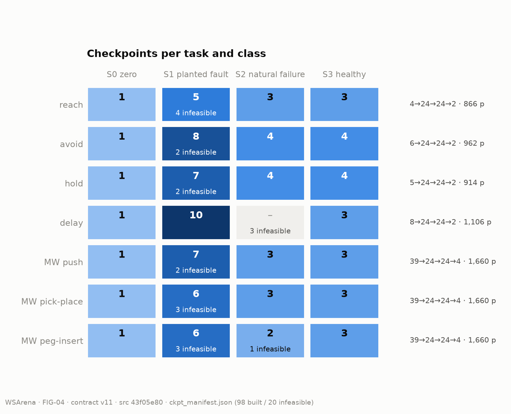
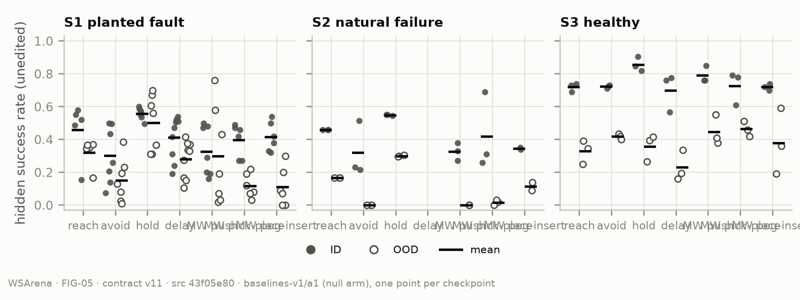
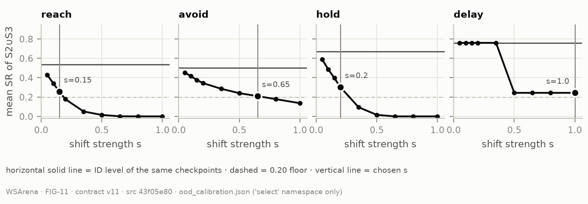
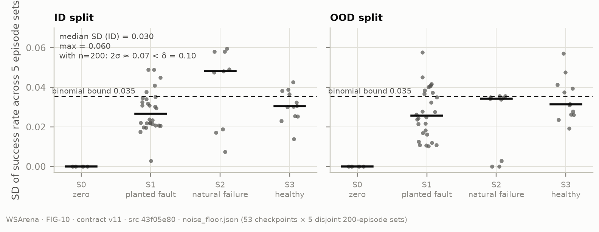
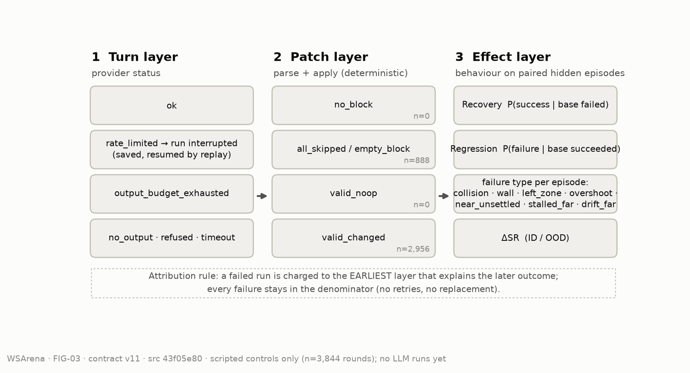

Benchmark details
Task ladder
| task | rung | environment | policy architecture |
|---|---|---|---|
| c01-reach | L2 | reach | (4, 24, 2) |
| c02-avoid | L3 | avoid | (6, 24, 2) |
| c03-hold | L4 | hold | (5, 24, 2) |
| c04-delay | L5 | delay | (8, 24, 2) |
| mw-push, mw-pickplace | official tier (Meta-World v3) | Sawyer arm, 500-step episodes | (39, 24, 4) |
Checkpoint classes
| class | construction | target SR band | tests |
|---|---|---|---|
| S0 zero | all-zero weights | — | synthesis (L1) |
| S1 planted | healthy policy + localised corruption (ground truth known) | 0.1–0.6 after corruption | repair (L2), localisation |
| S2 natural | trained on flawed demonstrations / data gap | 0.2–0.6 | repair (L2) |
| S3 healthy | naturally trained, no single-point fault | 0.6–0.9 | enhancement (L3) |




What the benchmark ships
| component | content |
|---|---|
| Checkpoints | 98 sealed checkpoints (sha256), manifest with infeasible combinations recorded |
| Edit language | WEP-1: superset of the MIT numpy-slice edits syntax, deterministic parser, no eval |
| Harness | WSP-8 state machine, gateway contract + conformance suite (Claude CLI, Codex), replayable runs |
| Controls | null, random, greedy random search, closed-form refit (privileged), oracle restore (privileged) |
| Analysis | paired cluster bootstrap, sign-flip test, Holm; independent loop-based recompute |
Task execution records

Each run stores spec.json, per-turn prompt/reply/result, per-round patch status and dev report, identity hashes and the hidden-evaluation arrays; see the run schema in docs/FILE_MANAGEMENT_ZH.md §5.